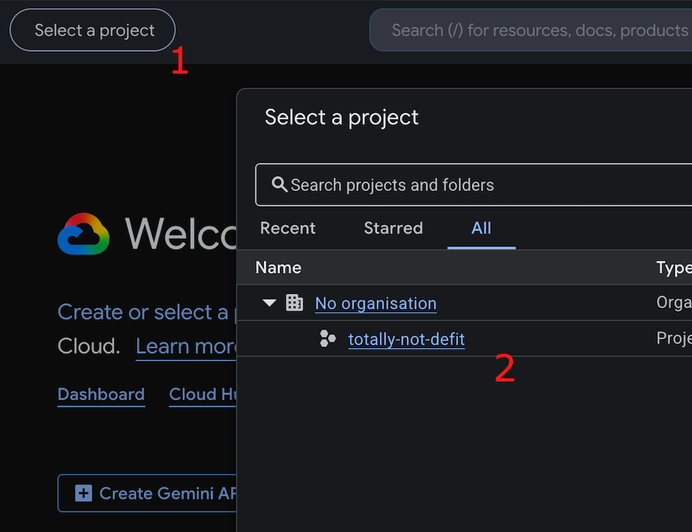
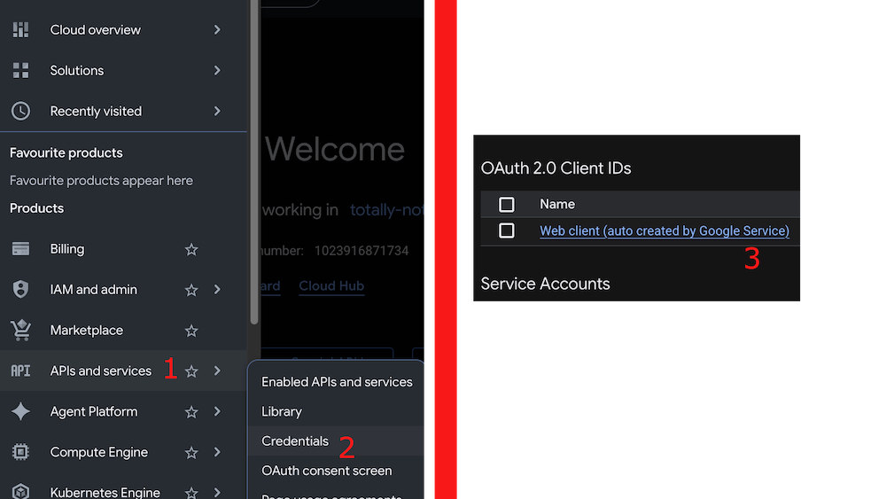
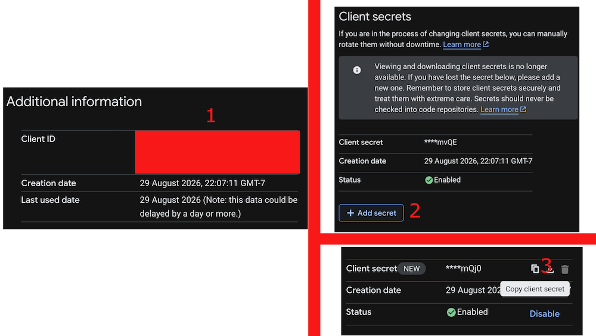

Fix Google sign-in
Set up Google sign-in for a re-signed DeFit++ APK. Some steps might require to be done on a computer.
Create a Firebase project
Sign in to Firebase Console and create a project for DeFit++.

Add DeFit as an Android app
Add an Android app using this exact package name:
com.fitness.debugger
The other Android-app fields do not matter for this login fix.

Add the patched APK's SHA-1
Open the Android app's settings in Firebase and add the SHA-1 fingerprint for the APK currently installed on this device.

Enable Google sign-in
In Firebase, navigate to Security → Authentication → Sign-in method, add Google as a sign-in provider, and save.

Open the same project in Google Cloud
Sign in to Google Cloud Console and select the project that you created in Firebase.

Open OAuth credentials
From the menu, go to APIs & Services → Credentials.
Find the OAuth 2.0 Client IDs table and open Web client (auto created by Google Service).

Copy the Web client ID and create a new secret
Copy the Client ID shown under Additional information. You will need this later.
The existing client secret normally cannot be revealed. Choose Add secret, then immediately copy and save the newly created secret.

Enter both values in DeFit++
Use the "Edit OAuth Credentials" option in DeFit++ to enter the Web client ID and secret.
Restart DeFit++
Fully close DeFit++, reopen it, and try Google sign-in again. You will see this warning the first time you try to sign in.